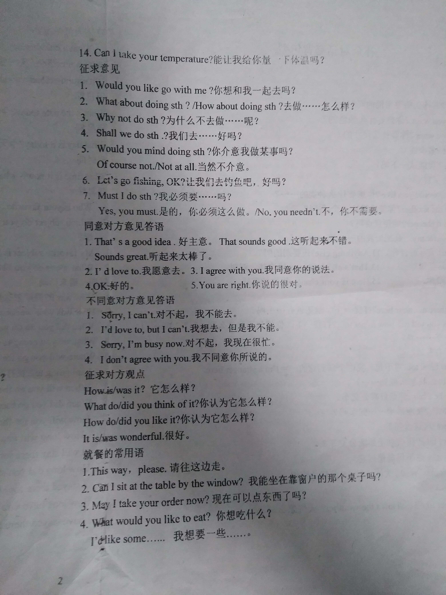
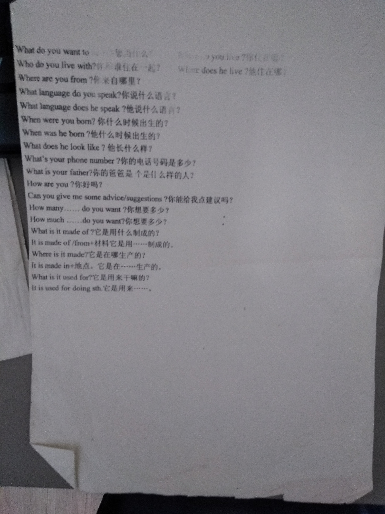
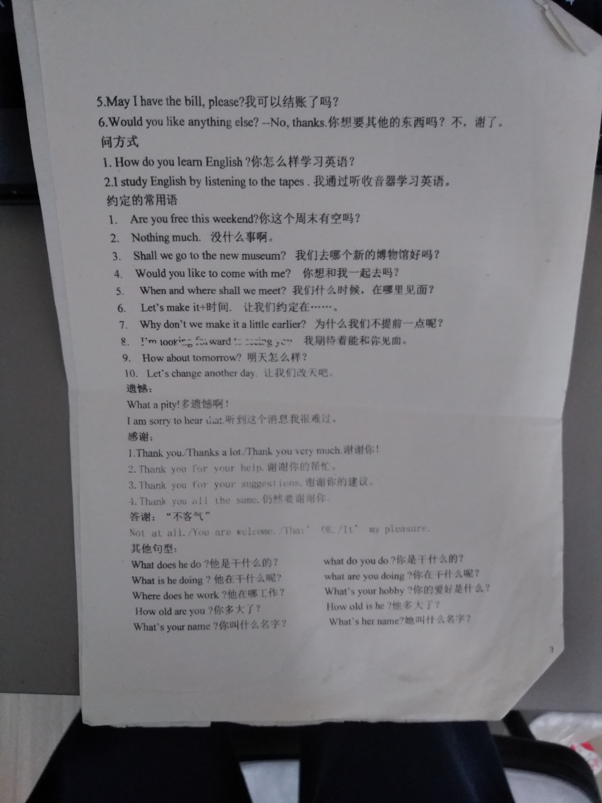

下载请直接保存网页
CC知识共享协议，反各种教育组织的收费行为！为了学生！
不需要微信公众号，没有VIP，纯靠闲人手打。
内容提供者：b站小沙盒工作室（无偿劳动）
大家凡是社会考试，有过学习资料的，欢迎自主提供（帮助别人，不收费）
由于家里没有扫描仪，为了提升效率，不可避免的会出现图像和纯文本混合使用
补全对话必背句型
购物
- Can I help you? 有什么需要帮助的吗？
- What color do you want ? 你想要什么颜色的？
- What size do you want ? 你想要什么尺寸的？
- How much is it? 多少钱？
- Can I try it on? 我能试一下吗？
- I'll take ite. 我会买它
- What kind of... would you like? 你想要什么种类的...？
- Can you show me another? 你能给我换一个/件吗？
- Can you make it cheaper? 能便宜点吗？
- I want to buy ... for my ... 我想给我的....买...
- It fits you well. 非常适合你
- Anything else? 还要别的吗？
- Is that all? 就这些吗？
- That's all, thank you. 就这些，谢谢
- Here you are. 给你
- Here is your change. 找你的零钱
问路
- Excuse me, is there a... near here? 打扰一下，这附近有......吗
- Excuse me,can you tell me how to get to ..?打扰一下，你能告诉我怎么到...吗？
- Where is a......? 这有一个......吗？
- How far is it？有多远？
- Sorry,I'm new here too.对不起，我也个新到这的。=I'm a stranger here.
- How can I get to... 我怎么能到......?
- You'd better take a bus.你最好乘公交车。
- Can I go there by...?我能乘坐......到那吗？
- Is it far from here？离这远吗？
- Which bus can I take？我该乘坐哪辆公交车？
- You can't miss it. 你不可能错过它。
- It's about 15 minutes' walk. 大约步行15分钟的流程
询问天气情况：
- What's the weather like?/ How's the weather? 天气怎么样？
陈述天气情况
- What a cold/hot day today! 今天多么热/冷啊！
- It's a nice/fine. 天气很好。
- It's sunny/cloudy/windy/rainy/snowy/foggy 晴天/多云/有风/下雨/下雪/有雾
问日期
- What's the date today? 今天是几号？
问星期
What day is it today? 今天星期几？
问时间
What time is it now? what's the time now?几点了？
问喜好
- Who is your favorite...?谁是你最喜欢的......?
- Which subject do you prefer, English or math? 哪一个是你最喜欢的科目，英语还是数学？
- My favorite subject is ...我最喜欢的科目是.......
- What sports do you like？你喜欢什么运动？
假期，周末活动
- How was it?假期怎么样?
- How was your weekend/holiday/trip?
- What did you do on weekends? 你周末干什么了？
- What are you going to do for your vacation? 你假期打算干什么？
- Where will you go for your vacation? 你假期打算去哪？
- I am going to ... 我打算去......
- When will you go there? 你将什么时候去那？
- How will you get there? 你打算怎么去那
- How long will you stay there> 你打算在那呆多长时间？
- I will stay there for+时间。 我在那呆了......
- How long have you stay there? 你在那呆多久了
- I have stayed there for+时间。 我呆了......
- When shall we meet? 我们什么时候见面？
- Where shall we meet? 我们在哪见面？
- Where did you go? 你去哪了？
- Have you been there before? 你以前去过那里吗？
- I have been there before. 我以前已经去过那了。
- Where has he gone? 他去哪里了？
- Do you have a plan for your weekend?周末你有什么计划吗？
- I would like to go ...我想去.......
- I have you seen this movie before? 你以前看过这部电影吗。
- I saw this movie yesterday。 我昨天看了这部电影。
打电话的常用语
- Can I speak to...,please?我能与......通话吗？
- He is not here right now. 他现在不在这儿。
- Who is that? 你是谁？
- Hold on,please 请别挂线。/请稍等。
- This is ...(speaking)我是...。
- Can I take a message for you? 我能为你捎口信吗？
- Can I leave a message? 我能留个口信吗？
- I'll tell her as soon as she comes back. 她一回来，我就告诉她。
- Could you ask her to call me back? 你要她给我回电吗，好吗？
看病的常用语
- What's wrong with you?What's the matter with you? What happened? 你怎么了？
- How long have you been like this? 你像这样多久了？
- When did it start? 什么时候发病的？
- I have a headache/cough/fever. 我得了头痛/咳嗽/发烧。
- Is it serious? 严重吗？
- It's nothing serious. 没什么严重的。
- How often should I take the medicine? 我该多久吃一次药？
- Take the medicine three times a day. 一天吃三次这个药。
- I hope you'll get better soon. 我希望你会很快好起来。
- How are you feeling now? 你现在感觉怎么样？
- Much better. 好多了。
- I am feeling better now. 我现在感觉好多了
- I don't feel very well. 我感觉很不好。


